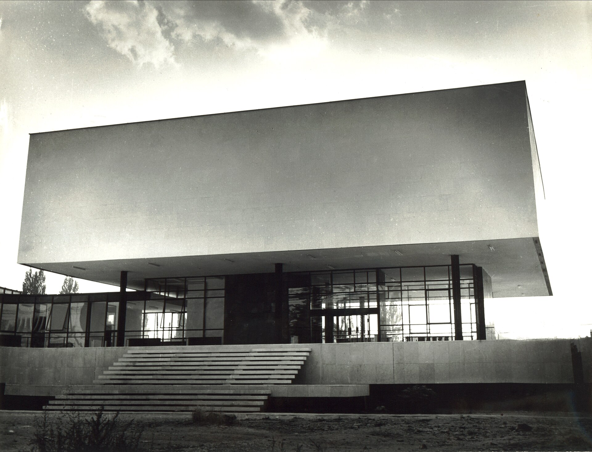

Devet ulaznica. Svaka za dvoje.
Poklon za 18. rođendan svima rođenim 2008. koji žive u Kantonu Sarajevo.
Iskoristiš svih devet? Čeka te posebna nagrada.
Prijavi se
mon.ks.gov.ba/form/vauceri-za-mlade-2026
Ponesi ličnu
ili drugi lični dokument s datumom rođenja
Preuzmi ih
Ministarstvo za nauku, visoko obrazovanje i mlade KS, Branilaca Sarajeva 21, II sprat, kancelarija 201
Izvor: dopis Ministarstva za nauku, visoko obrazovanje i mlade KS od 27. oktobra 2026.